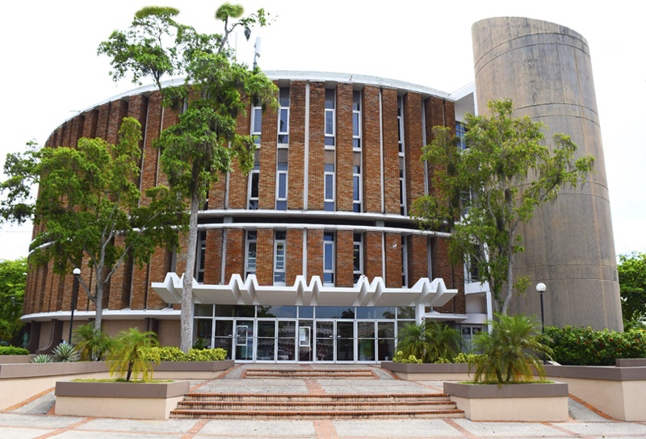

Somos una empresa que se encarga de desarrollar y vender productos para el cuidado diario de las personas, creada por dos jóvenes emprendedores que buscan mejorar su entorno y la vida de los demás.
Somos Jaseft Lugo y Naomi Guerrero, dos compañeros de secundaria entusiastas que descubrieron que tenían el interés común de desarrollar productos naturales para el cuidado personal.
Como co-creadores, un día nos vimos obligados a formar parte de un proyecto de emprendimiento, en el cual era necesario desarrollar una empresa con los principios en los cuales creemos. Por lo que nos pareció una excelente oportunidad, explorar el mundo del cuidado facial, ya que ambos tenemos una piel hermosa, creímos ideal compartir nuestros secretos de belleza. Así que elegimos nuestros ingredientes preferidos para crear nuestros productos en nuestra propia casa.
Llevar a nuestros clientes productos de alta calidad con los mejores ingredientes del país para que luzcan relucientes, mientras proponemos soluciones más sostenibles para el medio ambiente.
Convertirnos en una marca que cuente con la confianza nacional, siendo la número 1 en productos de belleza naturales del país.

Esto quiere decir que no solo vendemos productos, sino que también incentivamos un estilo de vida más saludable y sostenible. Desde las decisiones industriales que tomamos, hasta los ingredientes que utilizamos.
Utilizamos productos 100% veganos, los cuales son comprados a distribuidores dominicanos, ya que creemos en fomentar la economía del país. Además, nos sentimos orgullosos de pagar a nuestros artesanos de manera apropiada, sin olvidar que nuestra empresa está completamente en contra de realizar prueba en animales. Todo esto sumado a una perspectiva joven y fresca en cuanto a los problemas ambientales que debemos enfrentar. Uno de estos métodos sería: tener un sistema de reciclaje de nuestros propios envases en el cual, si retornas el envase, te damos un descuento para la próxima compra.


Nos sentimos muy orgullosos de ser una empresa que toma participación en problemas sociales, tanto nacionales como globales. Esto lo logramos a través de planes que se relacionen a nuestros ámbitos de trabajo. Uno de estos es el incentivo al reciclaje hacia nuestros clientes con la entrega de descuentos si devuelven nuestros envases, esperamos que esto cree una pequeña conciencia de reciclaje en las personas, además de que creemos que otras empresas pueden seguir estos pasos, creando una cultura más responsable ambientalmente.
Otro sería la utilización de productos 100% veganos y naturales, con la certeza de que nuestros productos no han sido testeados en animales. Fuera de estas iniciativas, nos envolvemos en otros planes no creados por nosotros que fomentan una mejora al medio ambiente y a la sociedad.
Por el momento nos estamos enfocando en el cuidado facial, en el cual esperamos convertirnos líderes. Sin embargo, en el futuro nos gustaría explorar otras áreas del cuidado personal, como lo son el cuidado del cabello, el cuidado del cuerpo, etc. Eso quiere decir que no nos vamos a limitar a mejorar la vida de nuestros clientes solo en un ámbito, sino en todos los posibles. Continuando así, otro tipo de planes ambientales que podamos desarrollar.
Biblioteca que pertenece a la UNPHU
Es el edificio del Colegio preuniversitario UNPHU y donde comienza la idea que atrajo este proyecto

Material que puede se utilizado en la creación de jabones y tiene propiedades antiinflamatorias y antialergiicas

Producto de Antelia Light que elimina cualquier residuo que quede en tu piel, ya sea de maquillaje o simplemente partículas en el aire.

Producto de Antelia Light esencial para preparar tu piel para cualquier otro producto.

Producto de Antelia Light. Este es un hidratante que sirve para cualquier tipo de piel, pero no es completamente necesario.
Logo perteneciente al Colegio preuniversitario UNPHU
Logo que pertenece a esta empresa Antelia Light